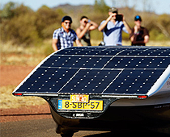
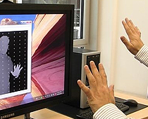

Windows 10 Event scheduled Jan. 21st
The next iteration of everyone's favorite operating system for PC's is on the horizon. Microsoft has scheduled a special press conference for January that will focus on new of Windows 10. For us at home, there will be a livestream.
Dec.12.2014

The never ending journey for energy keeps getting more and more interesting. Research into plants as viable alternatives to energy sources is continuously being done. This concept puts CO2 eating algae right above a hotspot - cars.
Dec.11.2014

Solar-powered commute getting closer to reality
New solar-powered car concepts are keep coming out like hot cakes. It makes sense seeing that solar energy has always been a very hot and highly researched alternative for energy and power. This concept is large enough for you to take family trips in.
Dec.11.2014

Apple patents new 3D space-mapping from Primesense
Remember the Kinect technology used for Microsoft's Xbox 360 and Xbox One gaming console systems? You know, the motion-sensorying bar peripheral that allowed you to play motion and dance games and see yourself on the TV? Well, Apple has acquired the firm responsible for that, and has a few ideas in mind.
Dec.11.2014